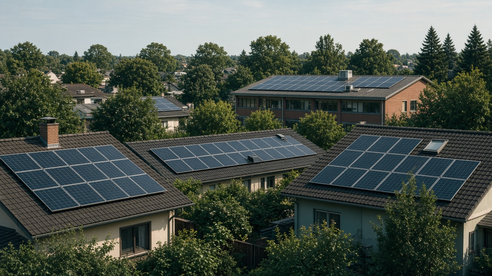
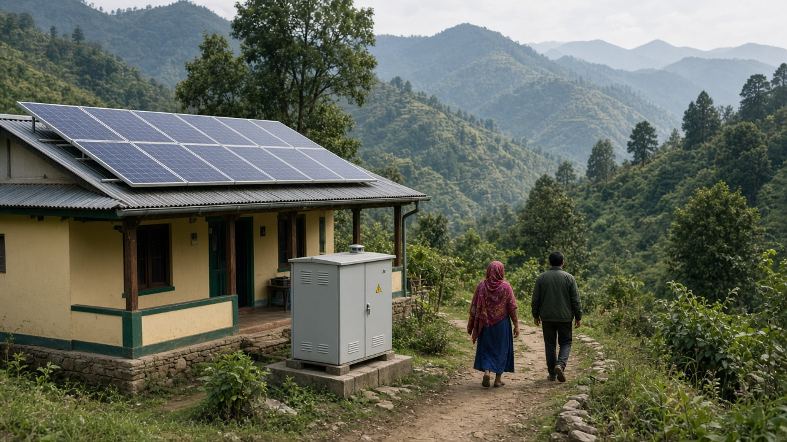
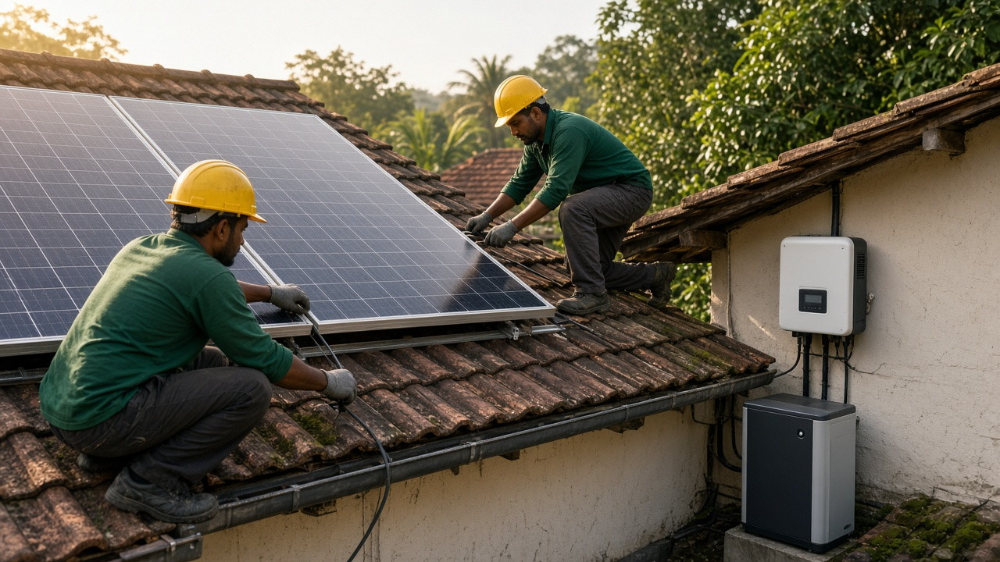

Solar PV and Rooftop Solar Adoption
Published on August 16, 2026

Solar photovoltaic technology converts sunlight directly into electricity using semiconductor cells, offering one of the fastest-growing renewable energy options worldwide. Rooftop solar adoption places panels on homes, schools, hospitals, and commercial buildings, allowing consumers to generate power on-site and reduce dependence on grid supply or diesel backup. Declining module costs, improved efficiency, and supportive policies have accelerated deployment across urban and rural areas. Net metering and feed-in tariff programs enable households to sell surplus electricity back to the grid, improving the economics of investment for middle-class families and small businesses alike.
In Nepal and similar sunny regions with uneven grid reliability, rooftop solar addresses load-shedding, powers essential services during outages, and supports irrigation pumps in agricultural districts. Systems range from small one-kilowatt installations for lighting and phone charging to larger arrays that run clinics, telecom towers, and factories. Quality matters: durable mounting structures, appropriate inverters, surge protection, and professional installation extend system life in monsoon and hail conditions. Public awareness campaigns and financing models such as pay-as-you-go or subsidized loans help overcome upfront cost barriers that still limit adoption among low-income households.
Rooftop solar also contributes to national decarbonization by displacing fossil generation and reducing peak demand on strained grids. When combined with battery storage, systems provide evening power after the sun sets, which is especially valuable where grid supply is intermittent. Urban planners increasingly require solar-ready building designs and streamline permitting to encourage uptake. Training local technicians creates employment while ensuring maintenance capacity exists outside major cities. As solar PV continues to become more affordable and integrated with smart meters, rooftop adoption will remain a cornerstone of distributed renewable energy strategies worldwide.

सौर्य फोटोभोल्टिक प्रविधिले अर्धचालक सेलहरू प्रयोग गरी सूर्यको प्रकाशलाई सिधै विद्युतमा रूपान्तरण गर्छ, जुन विश्वभर सबैभन्दा छिटो बढिरहेका नवीकरणीय ऊर्जा विकल्पहरू मध्ये एक हो। छतमा सौर्य प्यानल राख्नाले घर, विद्यालय, अस्पताल र व्यावसायिक भवनहरूमा विद्युत् स्थानीय रूपमा उत्पादन गर्न सकिन्छ र ग्रिड वा डिजेल ब्याकअपमा निर्भरता घटाउँछ। मोड्युलको मूल्य घट्दै जानु, दक्षता बढ्नु र अनुकूल नीतिहरूले सहरी तथा ग्रामीण क्षेत्रमा स्थापना तीव्र बनाएका छन्। नेट मिटरिङ र फिड-इन ट्यारिफ कार्यक्रमहरूले घरपरिवारलाई बढी विद्युत् ग्रिडमा बेच्न अनुमति दिन्छ, जसले मध्यम वर्गका परिवार र साना व्यवसायहरूका लागि लगानीको आर्थिकता सुधार्छ।
नेपाल जस्ता धूप प्रशस्त तर ग्रिड अविश्वसनीय क्षेत्रहरूमा छत सौर्यले लोड-शेडिङ समाधान गर्छ, बिजुली काटिएका बेला आवश्यक सेवा चलाउँछ र कृषि जिल्लामा सिँचाइ पम्पहरूलाई सहयोग गर्छ। प्रणालीहरू एक किलोवाटका साना स्थापनादेखि क्लिनिक, टेलिकम टावर र कारखाना चलाउने ठूला एरेसम्म हुन्छन्। गुणस्तर महत्त्वपूर्ण छ: बलियो माउन्टिङ संरचना, उपयुक्त इन्भर्टर, सर्ज सुरक्षा र व्यावसायिक स्थापनाले मनसुन र असिना अवस्थामा पनि प्रणालीको आयु लामो बनाउँछ। जनचेतना अभियान र पे-एज-यु-गो वा अनुदानित ऋण जस्ता वित्तीय मोडेलहरूले अगाडि लाग्ने लागतको बाधा कम गर्छ, जुन अझै पनि निम्न आय भएका घरपरिवारमा अपनत्व सीमित राख्छ।
छत सौर्यले जीवाश्म ईन्धन प्रतिस्थापन गरी र तनावग्रस्त ग्रिडमा शिख बोझ घटाएर राष्ट्रिय कार्बन उत्सर्जन कम गर्न पनि योग्यता दिन्छ। ब्याट्री भण्डारणसँग मिलाएमा, सूर्यास्तपछि बेलुकाको विद्युत् उपलब्ध गराउँछ, जुन अन्तरालय ग्रिड आपूर्ति भएका क्षेत्रमा विशेष महत्त्वपूर्ण हुन्छ। सहरी योजनाकारहरूले अझ बढी सौर्य-तयार भवन डिजाइन र सहज अनुमति प्रक्रिया अपनाउँछन्। स्थानीय प्राविधिकहरूलाई तालिम दिनाले रोजगारी सिर्जना हुन्छ र ठूला सहर बाहिर मर्मत क्षमता सुनिश्चित हुन्छ। सौर्य पीभी सस्तो हुँदै र स्मार्ट मिटरसँग एकीकृत हुँदै गएकाले, छत सौर्य अपनत्व विश्वभर वितरित नवीकरणीय ऊर्जा रणनीतिको आधारस्तम्भ बनेर रहनेछ।

सौर फोटोवोल्टिक तकनीक अर्धचालक सेलों की मदद से सूर्य के प्रकाश को सीधे बिजली में बदलती है, जो दुनिया भर में सबसे तेज़ी से बढ़ने वाले नवीकरणीय ऊर्जा विकल्पों में से एक है। छत पर सौर पैनल लगाने से घर, स्कूल, अस्पताल और व्यावसायिक इमारतों में बिजली स्थानीय स्तर पर उत्पादित होती है और ग्रिड या डीज़ल बैकअप पर निर्भरता घटती है। मॉड्यूल की कीमत में गिरावट, बेहतर दक्षता और अनुकूल नीतियों ने शहरी और ग्रामीण क्षेत्रों में तेज़ स्थापना को बढ़ावा दिया है। नेट मीटरिंग और फीड-इन टैरिफ कार्यक्रम घरों को अतिरिक्त बिजली ग्रिड को बेचने देते हैं, जिससे मध्यम वर्ग के परिवारों और छोटे व्यवसायों के लिए निवेश अधिक लाभदायक हो जाता है।
नेपाल जैसे धूप वाले लेकिन अनियमित ग्रिड वाले क्षेत्रों में छत सौर ऊर्जा लोड-शेडिंग कम करती है, बिजली कटौती के दौरान आवश्यक सेवाएँ चलाती है और कृषि ज़िलों में सिंचाई पंपों को सहायता देती है। प्रणालियाँ एक किलोवाट की छोटी स्थापनाओं से लेकर क्लीनिक, दूरसंचार टावर और कारखानों को चलाने वाले बड़े सेटअप तक होती हैं। गुणवत्ता महत्वपूर्ण है: मज़बूत माउंटिंग, उपयुक्त इन्वर्टर, सर्ज सुरक्षा और पेशेवर स्थापना मानसून और ओलावृष्टि में भी प्रणाली की उम्र बढ़ाते हैं। जागरूकता अभियान और पे-एज़-यू-गो या अनुदानित ऋण जैसे वित्तीय मॉडल शुरुआती लागत की बाधा को कम करते हैं, जो अभी भी कम आय वाले परिवारों में अपनाने को सीमित रखती है।
छत सौर ऊर्जा जीवाश्म ईंधन की बिजली को कम करके और तनावग्रस्त ग्रिड पर चरम माँग घटाकर राष्ट्रीय कार्बन उत्सर्जन में कमी में योगदान देती है। बैटरी भंडारण के साथ मिलकर ये प्रणालियाँ सूर्यास्त के बाद शाम की बिजली उपलब्ध कराती हैं, जो रुक-रुक कर बिजली मिलने वाले क्षेत्रों में विशेष रूप से उपयोगी है। शहरी योजनाकार अब सौर-तैयार भवन डिज़ाइन और सरल अनुमति प्रक्रिया को बढ़ावा दे रहे हैं। स्थानीय तकनीशियों को प्रशिक्षण देने से रोज़गार बनता है और बड़े शहरों के बाहर भी रखरखाव की क्षमता सुनिश्चित होती है। सौर पीवी सस्ता होता जा रहा है और स्मार्ट मीटर से जुड़ रहा है, इसलिए छत सौर अपनाना दुनिया भर वितरित नवीकरणीय ऊर्जा रणनीतियों का मुख्य स्तंभ बना रहेगा।